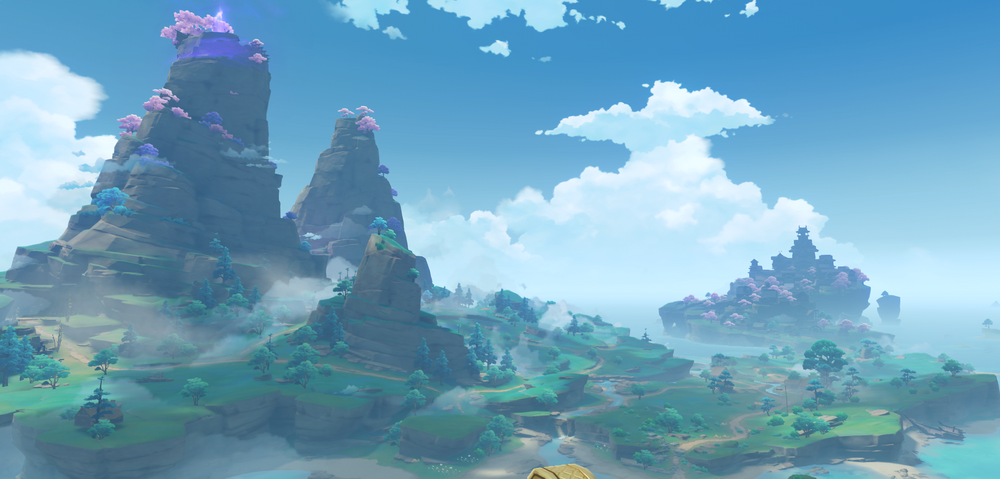

Narukami Island
Narukami Island is an island in Inazuma. The area spans across Ritou, its port of entry, to Mt. Yougou which is home to the Grand Narukami Shrine, and on its coast is Inazuma City. It also has a mass of dense forests under the moonlight and underwater ruins alike.
